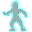
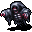
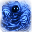
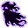
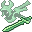
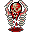
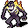
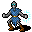
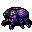
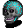

アンデッド Undead
英語版 CrawlWiki の記事「Undead」(0.28 向け、2023-05-14 版)の翻訳です。原文の著者は編集履歴をご覧ください。
この記事は 0.28 の時点の内容で、最新の 0.34 とは違うところがあるかもしれません。
アンデッドは墓の向こうから戻ってきた、かつて生きていたものたちだ。今では生者を獲物にするか、死人使いや不浄な司祭、一部の邪悪な神々の暗い意志に仕えている。骸骨、ゾンビ、吸血鬼、レイス、幽霊、グール、ミイラなどがアンデッドにあたる。迷宮ではありふれたモンスターで、一部の分岐(納骨堂、地下墓地、太古の霊廟)はほとんどアンデッドだけが住んでいる。なお、悪魔や悪魔的な生き物は、見た目がそれらしいもの(ヘルウィングや切り裂きの悪魔など)がいても、アンデッドではない。
アンデッドはすべて邪悪なものとして扱われ、多くの神はアンデッドを滅ぼすと信仰心を与えてくれる。当然ながら、イレデレンヌルとキクバークッグァは逆に、その卑しい信者にアンデッドを操る力を授ける。
プレイヤーが選べる種族にもアンデッドがいくつかあり、ひと味違った遊び方ができる。アンデッドのキャラクターは平均すると生きた種族よりやや弱いが、生まれつきの耐性で弱点を補えることが多い。一度死んでいるので、死んでも後の冒険者を苦しめる幽霊を残さない。
目次
アンデッドの特徴
アンデッド(プレイヤーのアンデッドも含む)には、共通の免疫と弱点がいくつかある。毒に免疫があり、冷気耐性を少なくとも 1 段階持ち、負のエネルギーと拷問も効かない。変異も受けない(代わりに能力値が下がる)。その一方で、アンデッドの解呪の呪文と神罰の武器(アンデッドには装備もできない)に弱く、神聖な攻撃からは生きたキャラクターより大きなダメージを受ける。
死なない身なので、バーサークにはなれず、眠りに落ちることもない。また、多くの呪文がそもそも働かない。自分の体を変える変成術の呪文のほとんど(半獣の躰、蜘蛛、氷の躯、刃の手、石像、竜化、嵐化、死者の躯)と、血の昇華、死のとば口、ボーグンジョルの究極治癒がそうだ。
邪悪なものとして扱われるので、アンデッドは善神(輝けるもの、ジン、エリヴィロン)を信仰できない。
ここに挙げたのは、すべてのアンデッドに共通する特徴だけだ。個々のアンデッドには、種族ごとに固有の能力や特性、弱点がさらに加わる。
プレイできるアンデッド
プレイヤーキャラクターとして選べるアンデッドの種族は次のとおり。
- ミイラ - 防腐処理を施された者たちで、死霊術と特に相性が良い。ただし薬を飲めず、包帯を巻いた乾いた体はかなり燃えやすい。
- グール - 死なない存在で、力はかなり強いが、技能にやや乏しく頭も鈍い。敵がそばにいると自然には回復しないが、敵を倒すと体力を取り戻せる。
- 吸血鬼 - 隠密に長けたアンデッドで、本来のアンデッドの状態と半ば生きた状態とを自由に切り替えられる。生きた状態では回復が速く、変身の呪文も使えるが、アンデッドとしての力はほとんど失う(アンデッドとしての弱点はなくならない)。ほかの 2 つのアンデッドの種族と違って、吸血鬼は変異を受ける。
ほかの種族も、死者の躯の呪文を唱えれば一時的にアンデッドになれる。アンデッドに共通の耐性と弱点を得るが、ミイラと同じく薬を飲めなくなる。
アンデッドのモンスター
派生アンデッド
ほかの生き物から作られたモンスターで、能力値や能力は生前の姿にほぼ左右される。ふつうの死人使いの取り巻きの大半はこれだ。ただ、知能が低く再生もしないので、召喚した生き物とは違った扱いの難しさがある。困ったことに、アンデッドの僕を作る手段の多くはもともと不安定で、プレイヤーが作ったアンデッドはたいていいずれ朽ちてしまう。イレデレンヌルの力で授かったアンデッドは時間がたっても朽ちないが、作り手が迷宮の別の階へ移ると、やはり崩れ去ってしまう。
 ゾンビ - よろよろ歩く、よみがえった死体。生前より遅いが、たいてい頑丈になっている。
ゾンビ - よろよろ歩く、よみがえった死体。生前より遅いが、たいてい頑丈になっている。
 骸骨 - ゾンビより弱いが、動かすのは簡単だ。死人使いが生き物の肉をほかのことに使ってしまったときの代わりになる。
骸骨 - ゾンビより弱いが、動かすのは簡単だ。死人使いが生き物の肉をほかのことに使ってしまったときの代わりになる。
 幻像 - 氷で作った生き物の複製。もろくて火炎に弱いが、近接攻撃で強烈な冷気ダメージを与える。
幻像 - 氷で作った生き物の複製。もろくて火炎に弱いが、近接攻撃で強烈な冷気ダメージを与える。
 幽体 - 肉体を離れ、死人使いに仕えるよう縛られた魂。ほかのアンデッドより弱いものもあるが、元の速さを保っていて、傷も回復する。
幽体 - 肉体を離れ、死人使いに仕えるよう縛られた魂。ほかのアンデッドより弱いものもあるが、元の速さを保っていて、傷も回復する。
忌まわしきもの
忌まわしきものは、体の部位を手当たりしだいにつなぎ合わせたもので、悪魔のような特徴を持つ。その特徴は一部がランダムに決まる。
x  小型の忌まわしきもの- 速くてそれなりに強いことが多いが、倒すのはさほど難しくない。
小型の忌まわしきもの- 速くてそれなりに強いことが多いが、倒すのはさほど難しくない。
X  大型の忌まわしきもの- 小さい仲間よりかなり強いが、動きは遅い。
大型の忌まわしきもの- 小さい仲間よりかなり強いが、動きは遅い。
幽霊とレイス
実体のないアンデッドで、変わった能力を持つものが多い。
W 

W 

W 

@ 

W 

W  シャドウレイス- 透明な幽霊で、うっかり通りかかった者を攻撃して減速させる。
シャドウレイス- 透明な幽霊で、うっかり通りかかった者を攻撃して減速させる。
W  水死者の魂- 水棲の民の生き神に誘われて死んだ者たちの魂で、生者にも同じ運命をたどらせるよう命じられている。
水死者の魂- 水棲の民の生き神に誘われて死んだ者たちの魂で、生者にも同じ運命をたどらせるよう命じられている。
W  アイドロン- この世のものならぬ恐慌をまき散らす恐ろしい亡霊。敵を近づけないようにしながら、負のエネルギーを浴びせかけてくる。
アイドロン- この世のものならぬ恐慌をまき散らす恐ろしい亡霊。敵を近づけないようにしながら、負のエネルギーを浴びせかけてくる。
W  静寂の亡霊- 呪文使いに恐れられる霊で、広い静寂のオーラをまとっている。
静寂の亡霊- 呪文使いに恐れられる霊で、広い静寂のオーラをまとっている。
W 

W  腐敗した口- 瘴気を吐き出す大口。タルタロスの呪われた荒れ地を、泣きわめき歯ぎしりしながらさまよっている。
腐敗した口- 瘴気を吐き出す大口。タルタロスの呪われた荒れ地を、泣きわめき歯ぎしりしながらさまよっている。
グール
難解な魔術で動かされ、死と腐敗をまき散らすアンデッドの怪物。死体は残すが、腐りすぎていてまともなゾンビにはできない。
n  屍肉喰らい- 生者を探してさまよう腐った死体。触れた敵を衰弱させる。
屍肉喰らい- 生者を探してさまよう腐った死体。触れた敵を衰弱させる。
n  膨れた抜け殻- 沼のガスで膨れて浮かぶ、さまよう死体。ちょっとしたことで破裂しやすい。
膨れた抜け殻- 沼のガスで膨れて浮かぶ、さまよう死体。ちょっとしたことで破裂しやすい。
n  湿地の屍骸- 沼地にいる朽ちかけた姿のもの。凍える魔法と氷の手を持つ。
湿地の屍骸- 沼地にいる朽ちかけた姿のもの。凍える魔法と氷の手を持つ。
n  グール - 強くて頑丈なアンデッドの怪物で、行く手をふさぐものは何でも引き裂いて喰らう。
グール - 強くて頑丈なアンデッドの怪物で、行く手をふさぐものは何でも引き裂いて喰らう。
n 

リッチ
存在を永らえるためにアンデッドになることを選んだ魔術師たち。リッチになるにはかなりの魔力が要るので、出会うアンデッドの中でも特に危険な部類に入る。
L  火夫- ゲヘナでアンデッドとなる刑を受けた、元は定命の者たち。這い寄る業火を呼び出し、侵入者に炎の嵐を浴びせる。
火夫- ゲヘナでアンデッドとなる刑を受けた、元は定命の者たち。這い寄る業火を呼び出し、侵入者に炎の嵐を浴びせる。
L  ハラジッドの魔法使い- 忘れられた神々に仕える死なざる者たち。味方を生贄にして負のエネルギーの爆発を起こす。
ハラジッドの魔法使い- 忘れられた神々に仕える死なざる者たち。味方を生贄にして負のエネルギーの爆発を起こす。
L  リッチ- さまざまな呪文を操る、強力なアンデッドの魔術師。
リッチ- さまざまな呪文を操る、強力なアンデッドの魔術師。
L  太古のリッチ- 長い年月を経て攻撃魔法を極めたリッチ。その呪文はとんでもなく強力だ。
太古のリッチ- 長い年月を経て攻撃魔法を極めたリッチ。その呪文はとんでもなく強力だ。
L  恐怖のリッチ- 強力な悪魔と契約を結んだリッチで、思いのままに悪魔を呼び出せる。
恐怖のリッチ- 強力な悪魔と契約を結んだリッチで、思いのままに悪魔を呼び出せる。
ミイラ
| 「わたしはエジプトとエジプト人を見る――ピラミッドとオベリスクを見る。 わたしは見る、刻まれた歴史を、歌を、哲学を、 |
主に納骨堂と太古の霊廟にいる。強いミイラは何といっても死の呪いが厄介で、中にはとても危険なものもある。
M  ミイラ - よろよろとのろく歩く、燃えやすい防腐処理済みの死体。死の呪いは持たない。
ミイラ - よろよろとのろく歩く、燃えやすい防腐処理済みの死体。死の呪いは持たない。
M  衛兵のミイラ- ふつうのミイラより手ごわく、燃えにくい。たちの悪い死の呪いも持っている。
衛兵のミイラ- ふつうのミイラより手ごわく、燃えにくい。たちの悪い死の呪いも持っている。
M  司祭のミイラ- 恐ろしいアンデッドの敵。拷問で死の寸前まで追い込み、逃げようとすれば打擲の一撃でとどめを刺し、うまく倒せても死の呪いを浴びせてくる。
司祭のミイラ- 恐ろしいアンデッドの敵。拷問で死の寸前まで追い込み、逃げようとすれば打擲の一撃でとどめを刺し、うまく倒せても死の呪いを浴びせてくる。
M  王族のミイラ- アンデッドの強力な王族。耐性が多く、司祭のミイラと同じだけの死霊術の腕を持ち、死の呪いは破滅的だ。
王族のミイラ- アンデッドの強力な王族。耐性が多く、司祭のミイラと同じだけの死霊術の腕を持ち、死の呪いは破滅的だ。
吸血鬼
呪術の腕前と、生者の血への渇きで知られるアンデッドの一群。
b  吸血コウモリ- ひ弱な血吸いの害獣。よほどの初心者でもなければまず脅威にならない。
吸血コウモリ- ひ弱な血吸いの害獣。よほどの初心者でもなければまず脅威にならない。
y  吸血蚊- 群れでやってくる鬱陶しいアンデッドの虫。1 匹ずつ相手にすれば危険になることはまずない。
吸血蚊- 群れでやってくる鬱陶しいアンデッドの虫。1 匹ずつ相手にすれば危険になることはまずない。
V  吸血鬼 - こそこそした連中で、透明になってから生命力を吸い取るのを好む。
吸血鬼 - こそこそした連中で、透明になってから生命力を吸い取るのを好む。
V  吸血鬼の騎士- そこそこ危険な敵。呪術でこちらを弱らせてから、近接攻撃で殴りつけてくる。
吸血鬼の騎士- そこそこ危険な敵。呪術でこちらを弱らせてから、近接攻撃で殴りつけてくる。
V  僵尸- 遠い国から来た、見かけによらず身軽な死体。刃物のような爪で生命の精髄を吸い取る。
僵尸- 遠い国から来た、見かけによらず身軽な死体。刃物のような爪で生命の精髄を吸い取る。
V  吸血鬼の魔術師- 死霊術を専門とする危険な相手。負のエネルギーへの耐性を忘れずに!
吸血鬼の魔術師- 死霊術を専門とする危険な相手。負のエネルギーへの耐性を忘れずに!
その他のアンデッド
Z  呪縛された魂- イレデレンヌルの力で縛られ、仕えることになった肉体のない魂。生前の能力の多くを保っている。
呪縛された魂- イレデレンヌルの力で縛られ、仕えることになった肉体のない魂。生前の能力の多くを保っている。
z 

z  空飛ぶ頭蓋骨- 速いが弱い。番兵としてはいまひとつだが、警報装置としては優秀だ。
空飛ぶ頭蓋骨- 速いが弱い。番兵としてはいまひとつだが、警報装置としては優秀だ。
B  ファラオアリ- 倒されると、近くにいるものの魂を縛りつけて幻像としてよみがえらせる虫。
ファラオアリ- 倒されると、近くにいるものの魂を縛りつけて幻像としてよみがえらせる虫。
t  幽霊蟹- ちょこまか走るアンデッドの甲殻類。あたりを霊の炎で満たし、幽霊を呼び出す。
幽霊蟹- ちょこまか走るアンデッドの甲殻類。あたりを霊の炎で満たし、幽霊を呼び出す。
*  滅亡せる霊魂- 寄る辺なくさまよう魂。ほかの生き物が死ぬ瞬間に、それをよみがえらせることができる。
滅亡せる霊魂- 寄る辺なくさまよう魂。ほかの生き物が死ぬ瞬間に、それをよみがえらせることができる。
z  骸骨の戦士- 強力なアンデッドの戦士。意外なほどの頑丈さに両手武器を組み合わせてくる。
骸骨の戦士- 強力なアンデッドの戦士。意外なほどの頑丈さに両手武器を組み合わせてくる。
z  太古の王者- 不自然な力と邪悪な魔法を吹き込まれた骸骨の戦士。
太古の王者- 不自然な力と邪悪な魔法を吹き込まれた骸骨の戦士。
z  レヴナント- 霊の炎に包まれた禍々しい姿のもの。あたりを満たすその炎からは、敵対する霊も生まれてくる。
レヴナント- 霊の炎に包まれた禍々しい姿のもの。あたりを満たすその炎からは、敵対する霊も生まれてくる。
D  骸骨ドラゴン- ドラゴンの骨を継ぎ合わせて作られた、強大なアンデッド。
骸骨ドラゴン- ドラゴンの骨を継ぎ合わせて作られた、強大なアンデッド。
A  涜神の従者- 闇の力の擁護者。このアンデッドの天使は、光の代わりに暗影を放つ。
涜神の従者- 闇の力の擁護者。このアンデッドの天使は、光の代わりに暗影を放つ。
B 

z 

z  殺人トウモロコシ- 恐ろしく速いアンデッドのトウモロコシ(冗談ではない)。ゾットの領域に入った者に襲いかかり、速さを奪う。
殺人トウモロコシ- 恐ろしく速いアンデッドのトウモロコシ(冗談ではない)。ゾットの領域に入った者に襲いかかり、速さを奪う。
z  呪いの足指- 体から離れたアンデッドの足の指。能力がとんでもなく危険でなければ、ただのお笑いぐさなのだが。
呪いの足指- 体から離れたアンデッドの足の指。能力がとんでもなく危険でなければ、ただのお笑いぐさなのだが。
f  殺人キノコ- 呪いの足指が呼び出す、疫病をもたらし生命力を吸う菌類。
殺人キノコ- 呪いの足指が呼び出す、疫病をもたらし生命力を吸う菌類。
C  穢れたリヴァイアサン- タルタロスをうろつくアンデッドの巨人。侵入者を魅了してから大岩を投げつけてくる。
穢れたリヴァイアサン- タルタロスをうろつくアンデッドの巨人。侵入者を魅了してから大岩を投げつけてくる。
ユニークのアンデッド
p  プレイヤーの幽霊 - ゾットのオーブを探す途中で倒れた、別の冒険者の成れの果て。生前のスキルや特徴の多くを残している。
プレイヤーの幽霊 - ゾットのオーブを探す途中で倒れた、別の冒険者の成れの果て。生前のスキルや特徴の多くを残している。
M  メンカウラー王- 忘れ去られたミイラの王で、敵を拷問する力を持つ。
メンカウラー王- 忘れ去られたミイラの王で、敵を拷問する力を持つ。
L  ゾングルドルック - 死霊術の大家。その墓所を荒らす者がいれば、リッチとなってよみがえり襲いかかる。
ゾングルドルック - 死霊術の大家。その墓所を荒らす者がいれば、リッチとなってよみがえり襲いかかる。
L  ボリス- 再生の術を極めたリッチで、倒しても迷宮のどこかでまたよみがえる。
ボリス- 再生の術を極めたリッチで、倒しても迷宮のどこかでまたよみがえる。
V  ジョリー- 吸血鬼の中で最強の存在。壊滅的な魔法を操り、相手を魅了する眼差しを持つ。
ジョリー- 吸血鬼の中で最強の存在。壊滅的な魔法を操り、相手を魅了する眼差しを持つ。
z  マーリー- 地獄の入り口に現れる呪いの頭蓋骨。魔法に加えて、噛みつきもかなり痛い。
マーリー- 地獄の入り口に現れる呪いの頭蓋骨。魔法に加えて、噛みつきもかなり痛い。
L  マスター・ブラスター- ダンジョンスプリントのThunderdomeのマップのボス。Crawl のいつもの基準から見ても、ばかばかしいほど強い。
マスター・ブラスター- ダンジョンスプリントのThunderdomeのマップのボス。Crawl のいつもの基準から見ても、ばかばかしいほど強い。
削除されたアンデッド
x  這いずる死体- 捻れた蘇生の呪文で作られる、這い回る哀れな体。戦う力はまったくないが、ほかの忌まわしきものと合体してもっと大きなものになれる。0.27 で捻れた蘇生とともに削除された。
這いずる死体- 捻れた蘇生の呪文で作られる、這い回る哀れな体。戦う力はまったくないが、ほかの忌まわしきものと合体してもっと大きなものになれる。0.27 で捻れた蘇生とともに削除された。
x  おぞましい肉塊- いくつもの死体が合わさったもの。這いずる死体よりは少し頑丈だが、戦えるようになるにはさらに肉が要る。0.27 で捻れた蘇生とともに削除された。
おぞましい肉塊- いくつもの死体が合わさったもの。這いずる死体よりは少し頑丈だが、戦えるようになるにはさらに肉が要る。0.27 で捻れた蘇生とともに削除された。
J  死のウーズ- 腐った肉でできたジェリー。装備を腐食させる代わりに、体力を衰弱させた。0.27 で削除された。
死のウーズ- 腐った肉でできたジェリー。装備を腐食させる代わりに、体力を衰弱させた。0.27 で削除された。
W  飢えた幽霊- 敵の満腹度を奪い、飢え死にさせようとした幽霊。0.26 で空腹の仕組みとともに削除された。
飢えた幽霊- 敵の満腹度を奪い、飢え死にさせようとした幽霊。0.26 で空腹の仕組みとともに削除された。
L  生まれざる者- イレデレンヌルに仕える腕利きのリッチの司祭で、死霊術の中でもあまり見かけない術を使った。0.17 で削除された。
生まれざる者- イレデレンヌルに仕える腕利きのリッチの司祭で、死霊術の中でもあまり見かけない術を使った。0.17 で削除された。
z  燃える死体- 火の中で死んだ者の燃え続ける亡骸で、そのむごい運命をほかの者にも味わわせようとした。0.15 で削除された。
燃える死体- 火の中で死んだ者の燃え続ける亡骸で、そのむごい運命をほかの者にも味わわせようとした。0.15 で削除された。
n  疫病の徘徊者- 疫病と瘴気を広めるためだけに存在した、病に冒された巨体。0.15 で削除された。
疫病の徘徊者- 疫病と瘴気を広めるためだけに存在した、病に冒された巨体。0.15 で削除された。
n  腐った巨体- 病に蝕まれた、よろよろ歩く大きな死体。0.13 で疫病の徘徊者に置き換えられた。
腐った巨体- 病に蝕まれた、よろよろ歩く大きな死体。0.13 で疫病の徘徊者に置き換えられた。
M  湿地のミイラ- 水浸しの場所にいたミイラの一種。0.11 で湿地の屍骸に置き換えられた。
湿地のミイラ- 水浸しの場所にいたミイラの一種。0.11 で湿地の屍骸に置き換えられた。
p  テルプシコラー- 近くの武器に魔法をかけて、自分の舞踏に加わらせることができるはずだった幻影。0.8 で検討されたが、実装されなかった。
テルプシコラー- 近くの武器に魔法をかけて、自分の舞踏に加わらせることができるはずだった幻影。0.8 で検討されたが、実装されなかった。